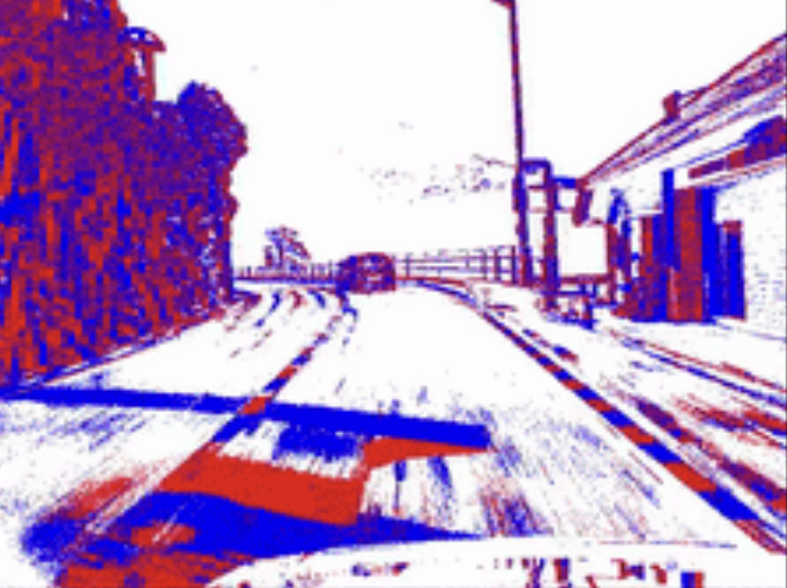
May '25
LEVO: Event-based VO
Keywords: Pytorch, WandB, Visual Odometry, CUDA, Event Camera
Developed an event-based feature-matching framework that matches key-points between consecutive temporal windows to predict relative pose, trained end-to-end on MVSEC and TUM-VIE datasets.
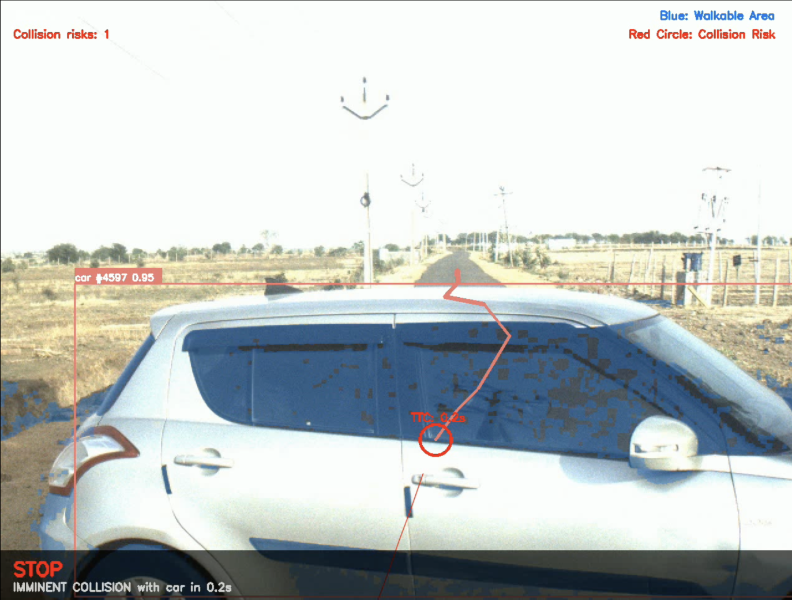
Jan'25
PATHvision
Keywords: Pytorch, Trajectory Prediction, Autonomous driving, Segmentation, Detection, Decision Making
Designed a system for planning in autonomous driving scenarios. Raw RGB frames are used to detect obstacles, segment road, and track the moving objects on segmented road. The decision is made based on future positions of other objects on the road. Tested on Indian Driving Dataset (IDD).
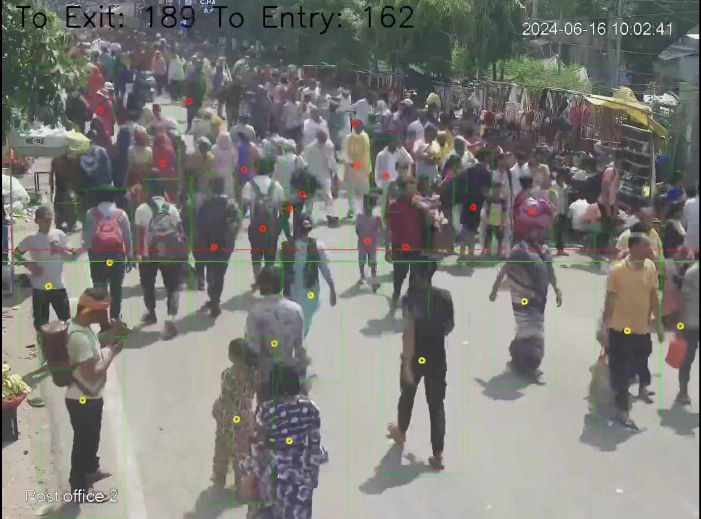
May '24
Crowd Counting System in Dense Indian Environment
Keywords: multi-object tracking, hyperparameter tuning, quantization & pruning, OpenVINO acceleration, perspective-aware ROI segmentation, RPi
Built a real-time crowd-entry/exit counting system using YOLOv9 + ByteTrack with ROI-based filtering, model-compression, and batch-processing optimizations to achieve high-accuracy inference on edge devices like Raspberry Pi. The Device named "CrowdEye" was deployed for crowd Monitoring at religious Indian places like Haridwar. Also,a similar device called "Transiteye" was deployed in public buses. This project was a part of my internship at IIT Roorkee.
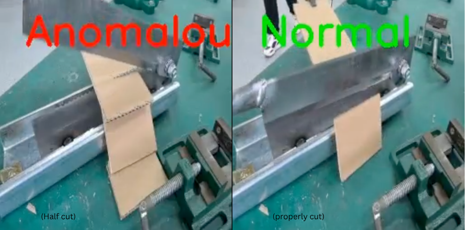
Nov '24
Anomaly detection in Manufacturing Industry using Computer Vision
Keywords: Isolation Forests, XGBoost, CNN-based anomaly detection, LSTMs, explainable LLM systems
Developed Anomaly detection Algorithm using statistical and ML based Techniques. Mainly, Isolation-based methods were used. Proposed a need for explainable anomaly dteection system.
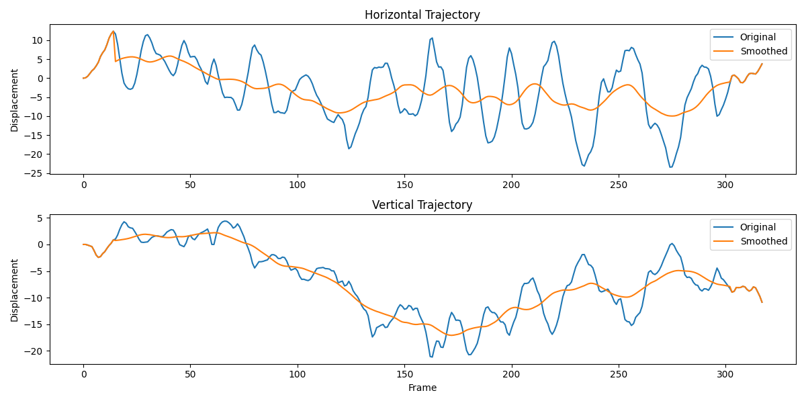
Oct '24MiFlow: Video Stabilization model
Keywords: Depth-guided smoothing, transformer features, motion warping
Built FlowDepthFormer — a frame-wise video stabilizer that fuses MiDaS depth estimation with transformer-based temporal smoothing.
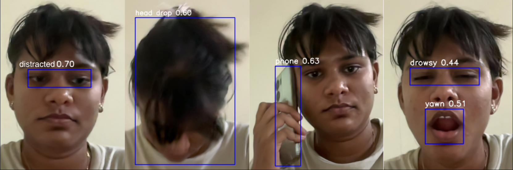
Sept '24
Driver Drowsiness detection and Alerting System
Keywords: YOLOv8, Openvino, computer vision, distraction monitoring, drowsiness detection, audio alerts.
Built AlertAI: a real-time drowsiness & distraction detection system using YOLOv8 to monitor head drops, yawning, phone use, and more - with audio alerts.
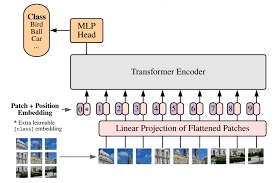
Dec '24
Comprehensive Study on Vision Transformers
Keywords: Attention, Transformers, ViTs, CNNs
Working on a comprehensive guide on Vision Transformers. It also includes papers that led to Vision Transformer and those that follow. Each section discusses key-papers in the field for their architecture, ideas and a simple implementation.
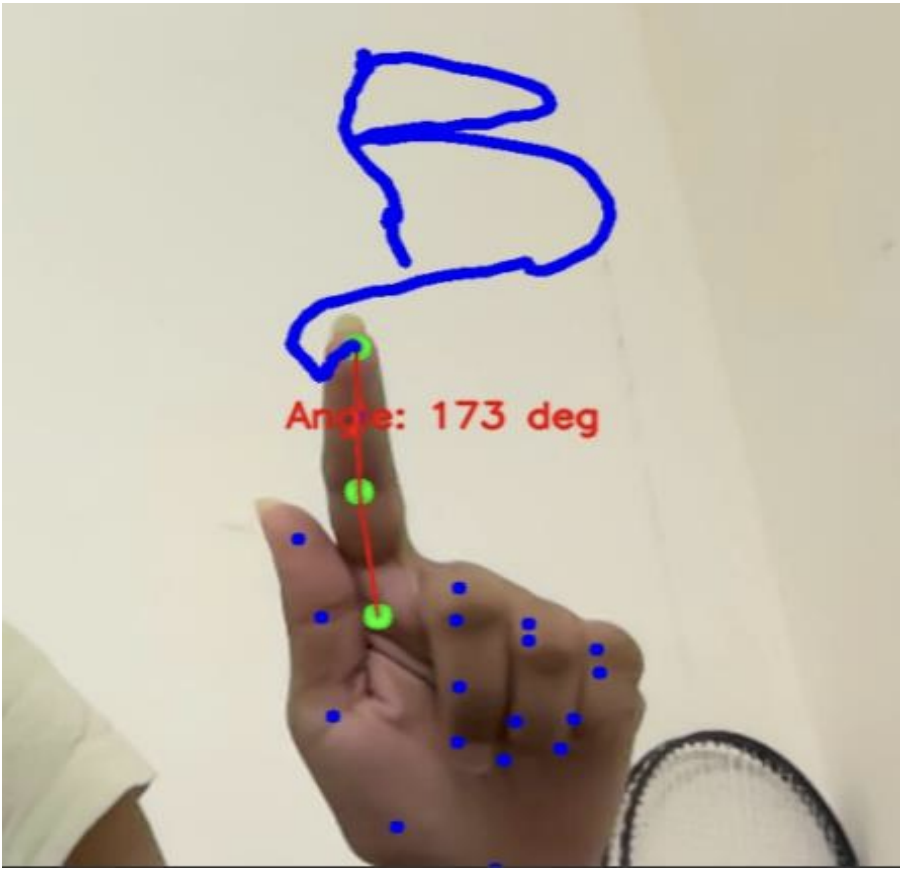
Aug '24
Air writing
Keywords: Fingertip Detection , Mediapipe Hands model , Fingertip Tracking, Gesture Segmentation , OCR
Developed a visual air-typing system that tracks the index finger using a custom vision algorithm, detects writing angles for spacing, and uses Google Vision OCR to convert the drawn trajectory into text at Real-time.
 Aug '24
Aug '24
Keywords: text-to-image, latent diffusion models, PyTorch, HuggingFace, prompt encoding.
Stable diffusion Image generator
Built a text-to-image generator using Stable Diffusion (v1-4), PyTorch, and Hugging Face Diffusers.
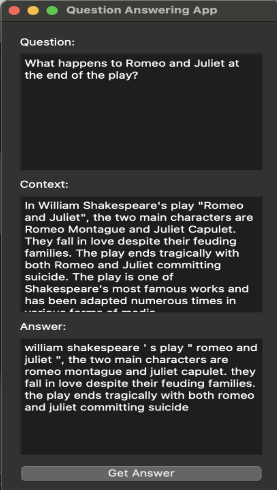
Jul '24
Question Answering bot
Keywords: LLM fine-tuning, PyQt5 GUI, Flask API, context-aware QA, transformer inference.
Fine-tuned a large language model (LLM) to build a custom chatbot with a PyQt5 GUI frontend and Flask backend that answers questions based on provided context.
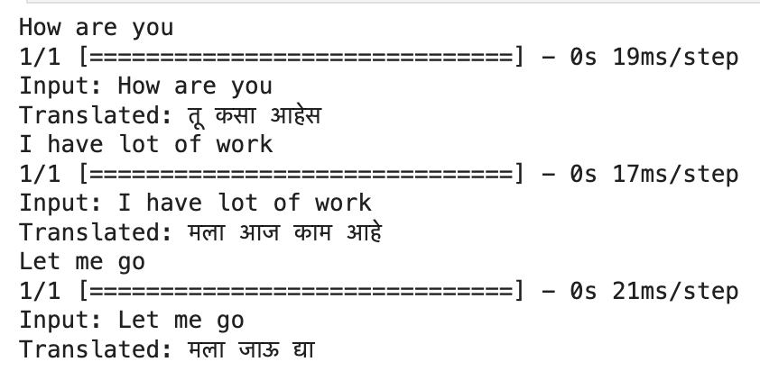
March '24
English to marathi machine translator
Keywords: encoder-decoder architecture, subword tokenization, cross-entropy loss, beam search.
Built a Marathi ↔ English neural machine translator by fine-tuning a sequence-to-sequence Transformer on parallel corpora.
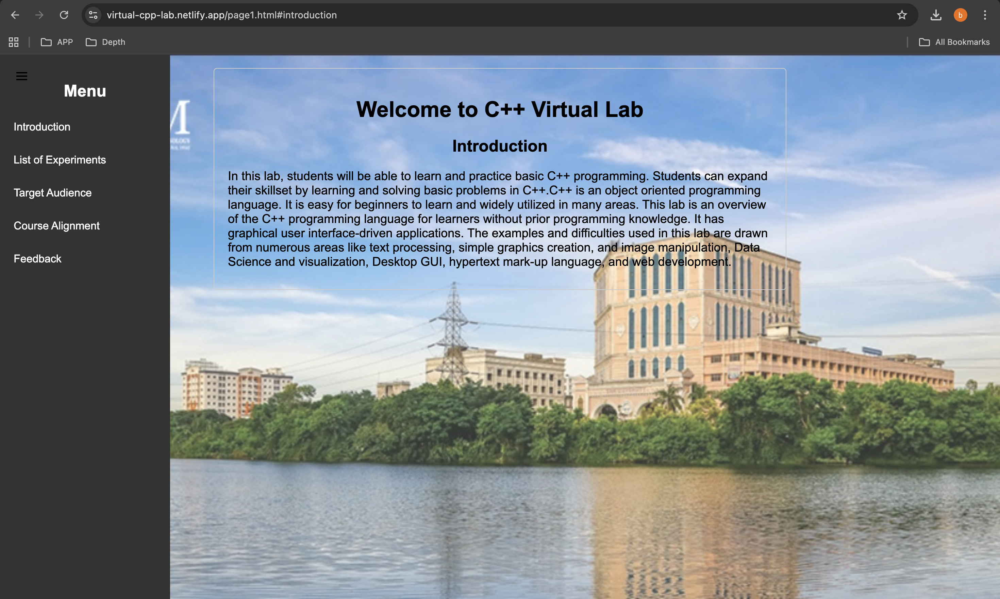
Jan '24
Virtual cpp lab
Keywords: HTML, CSS, JavaScript, GitHub Pages, Netlify.
Developed an interactive virtual C++ lab with web-based simulations and a Python backend to run and visualize core C++ programming experiments.